iris_points = alt.Chart(iris).mark_circle(size=100).encode(
x='petalWidth',
y='petalLength',
color='species'
)
iris_points14 Color
14.1 Why bother?
This chapter builds on the grouping channels in Groups and the communication choices in Communication.
. These lecture figures show how . The programming examples follow the visual examples later in the chapter.
14.2 Color depends on context

The dress debate illustrates that perceived color depends on how we interpret illumination. Different readers can experience the same image differently, so a color choice that seems obvious to its creator may not be obvious to everyone.
14.3 Surroundings change apparent lightness
Compare squares A and B before watching the next example. The surrounding checkerboard and cast shadow influence our judgment of their lightness. Illustration: Edward H. Adelson.

The animation reveals that the two squares use the same gray values. Apparent lightness is not determined by a pixel value alone; its surroundings help determine how we interpret it. Animation: Edward H. Adelson.
14.4 Picking the right color palette

The distance is a continuous numerical variable, not a collection of distinct groups. Abrupt hue or lightness changes can nevertheless encourage us to see boundaries that were not defined in the data.
14.5 Keep numerical gradients continuous
Rainbow
Viridis

Grayscale
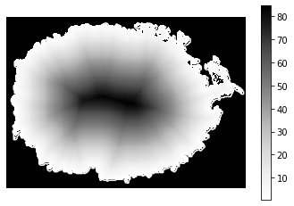
An ordered progression in lightness helps readers follow increasing values. Grayscale can provide that order, while a carefully designed progression in hue can help readers distinguish additional detail without introducing abrupt bands.
14.6 Test the ordering in grayscale

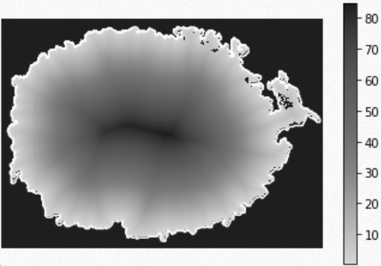
Converting a figure to grayscale reveals whether its lightness supports the intended order. Alternating light and dark regions can make a smooth numerical change look discontinuous.
14.7 Check contrast for different color vision
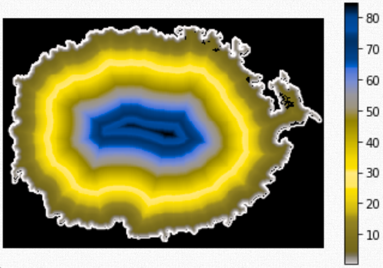

A palette needs to remain interpretable when readers perceive its hue contrasts differently. Simulations are useful checks, but do not represent every viewer; ordered lightness, labels, and redundant encodings can provide additional support.
14.8 RGB and HSL describe display colors

RGB and HSL models: SharkD, CC BY-SA 3.0.
RGB specifies red, green, and blue components; HSL describes hue, saturation, and lightness. These are ways to specify colors, not guarantees of perceptual uniformity: equal steps in their coordinates need not look equally different.
14.9 Separate hue, saturation, and lightness

Hue answers roughly “which color?”, saturation describes how colorful or gray it looks, and lightness describes a dark-to-light dimension. The swatches from the Seaborn palette tutorial help separate these choices.
14.10 Use hue to distinguish unordered groups

Source: Seaborn palette tutorial.
Distinct hues can separate categories without suggesting a low-to-high sequence. An ordered lightness palette can accidentally imply a ranking among otherwise unordered groups.
14.11 Use lightness to communicate numerical order
For numerical magnitude, the colors should support a recoverable order. An arbitrary set of category colors makes it harder to judge which values are larger.
14.12 Sequential palettes need an ordered progression

A sequential palette represents movement along a numerical range. Check the lightness progression as well as the attractiveness of the color strip; plateaus or reversals can make some changes stand out more than others.
14.13 Perceptual uniformity helps equal steps look equal

Perceptually designed palettes aim to make equal data steps look approximately equally different. These reference diagrams come from the Matplotlib colormap guide.
14.14 Inspect uneven lightness changes
A colorful palette can have a highly uneven lightness profile. Those peaks and troughs can create artificial emphasis or obscure the ordering of values.
14.15 The same values can look very different

Changing the palette changes which features attract attention even when the values are unchanged. Choose a palette for the comparison it supports, rather than for visual excitement alone.
14.16 Guessing a numerical sequence from hue


Where would you expect red to fall in this sequence before reading the legend? Hue alone does not provide an unambiguous numerical order; the legend and the palette’s lightness structure both matter.
14.17 Cyclic data need a palette that wraps around
Use a cyclic palette when the underlying variable wraps around, such as an angle or a position within a yearly cycle. Similar endpoint colors communicate that connection, but would be misleading for unrelated low and high endpoints on a linear scale.
14.18 Diverging palettes need a meaningful midpoint
Use a diverging palette when departures above and below a meaningful reference have different interpretations. Examples include change from a baseline or correlations centered on zero; the middle should not be chosen merely because it is halfway between the observed extremes.
14.19 Categorical palettes distinguish groups

A categorical palette should make groups distinguishable without implying a numerical order. Its usefulness still depends on the number of categories, the background, and readers’ color vision.
14.20 Too many colors become clutter
Coloring every country can create decoration rather than useful identification. Highlight selected comparisons, divide the display into smaller views, or use direct labels when that makes the intended question easier to answer.
14.21 Work with familiar color associations

When colors have a strong existing association, working with it can reduce the reader’s effort. The bar values are unchanged, but using blue for water and green for land makes the categories easier to anticipate.
14.22 Facilitate interpretation through informed color choices
For continuous data, a perceptually uniform colormap is often a useful starting point. Equal steps in the data should produce approximately equal perceived changes in color. Lightness is especially important for conveying ordered magnitude: The Matplotlib colormap guide contains examples, and this talk about viridis explains many of the design principles.
Color vision and accessibility
Color vision deficiencies affect a substantial number of readers. Red–green deficiencies are more common among men than women, and their prevalence varies across populations. The same guidelines often improve a chart for readers with typical color vision too.
The Coblis simulator can simulate different color vision deficiencies for an uploaded image. The cividis palette was designed to give similar perceptual ordering to readers with and without common red–green deficiencies. For categorical groups, redundant shapes or direct labels can help in addition to choosing colors carefully.
Avoid artificial boundaries
The jet rainbow colormap has sharp changes in hue and uneven lightness. Yellow and cyan regions can attract disproportionate attention, creating apparent boundaries or features in otherwise smoothly varying data. Because higher values are not consistently lighter, the order is also hard to recover in grayscale.
For more examples, see How bad is your colormap? and The rainbow is dead … long live the rainbow. The turbo palette improves some shortcomings of jet, but does not make every rainbow palette perceptually uniform or suitable for every reader. Viridis or cividis are often better defaults for ordered values. For a broader discussion, see how color determines what we see.
14.23 Categorical color schemes
We use iris measurements to compare the three species.
Altair’s default categorical palette is tableau10, a sequence of ten colors beginning with blue, orange, and red.
Set the palette by name with scheme inside alt.Scale. The Vega scheme reference lists categorical, sequential, diverging, and cyclic palettes.
iris_points.encode(color=alt.Color('species').scale(scheme='dark2'))You can also supply colors explicitly, using names or hexadecimal codes. Here the order of the color range corresponds to the order of the species domain.
colors = ['coral', 'steelblue', 'rebeccapurple']
iris_points.encode(color=alt.Color('species').scale(
domain=['setosa', 'versicolor', 'virginica'], range=colors
))The default categorical scale in ggplot selects equally spaced hues from a color wheel.
iris_points <- ggplot(iris, aes(x = Petal.Width, y = Petal.Length, color = Species)) +
geom_point(size = 5)
iris_points
ColorBrewer palettes are available through scale_color_brewer() and scale_fill_brewer() for categories. The distiller scales interpolate these palettes for continuous values.
iris_points + scale_color_brewer(palette = 'Dark2')
The Tableau palette used by Altair is available through ggthemes. The R color palettes collection shows many other choices and the packages that provide them.
iris_points + ggthemes::scale_color_tableau()
Here we specify the same colors as the Altair example using their hexadecimal codes. Naming the values makes the mapping to species explicit.
iris_points + scale_color_manual(values = c(
setosa = '#FF7F50', versicolor = '#4682B4', virginica = '#663399'
))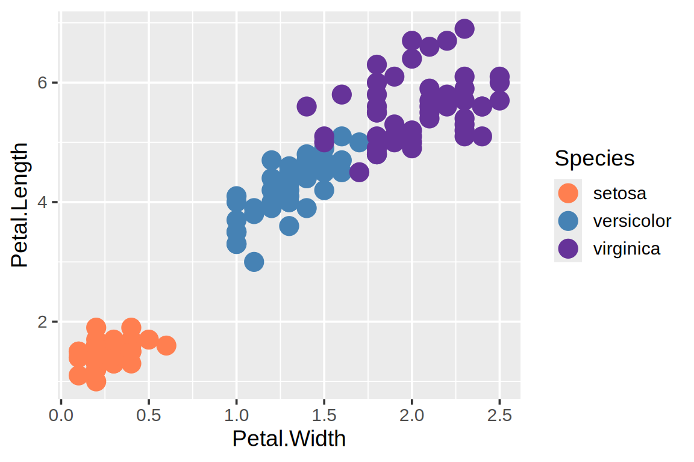
Experimenting with custom palettes can be useful, but well-designed existing palettes incorporate considerable research and testing. They are a good starting point for a final communication figure. Hexadecimal RGB codes range from #000000 for black to #ffffff for white. An image editor or online color picker can help recover the exact code for a color in an existing image.
The name rebeccapurple is a reminder of the people behind computational tools. Read the story of this color’s name.
14.24 Sequential color schemes
When working on a light background, it is often useful for low values to be closest to that background and larger values to be more visually prominent. Consider the background, the palette direction, and the meaning of high values together.
Mapping petal width to color selects a continuous palette.
iris_points.encode(color=alt.Color('petalWidth:Q'))The palette can be changed in the same way as for categories.
iris_points.encode(color=alt.Color('petalWidth:Q').scale(scheme='greenblue'))Viridis was developed for Matplotlib and is now available in many visualization tools. It uses changes in lightness and hue while aiming to preserve perceptual ordering.
iris_points.encode(color=alt.Color('petalWidth:Q').scale(scheme='viridis'))Reverse the palette with reverse=True, just as for the axis scales in Communication.
iris_points.encode(color=alt.Color('petalWidth:Q').scale(scheme='viridis', reverse=True))Mapping a numerical variable to color uses a continuous scale.
iris_numeric <- ggplot(iris, aes(x = Petal.Width, y = Petal.Length, color = Petal.Width)) +
geom_point(size = 5)
iris_numeric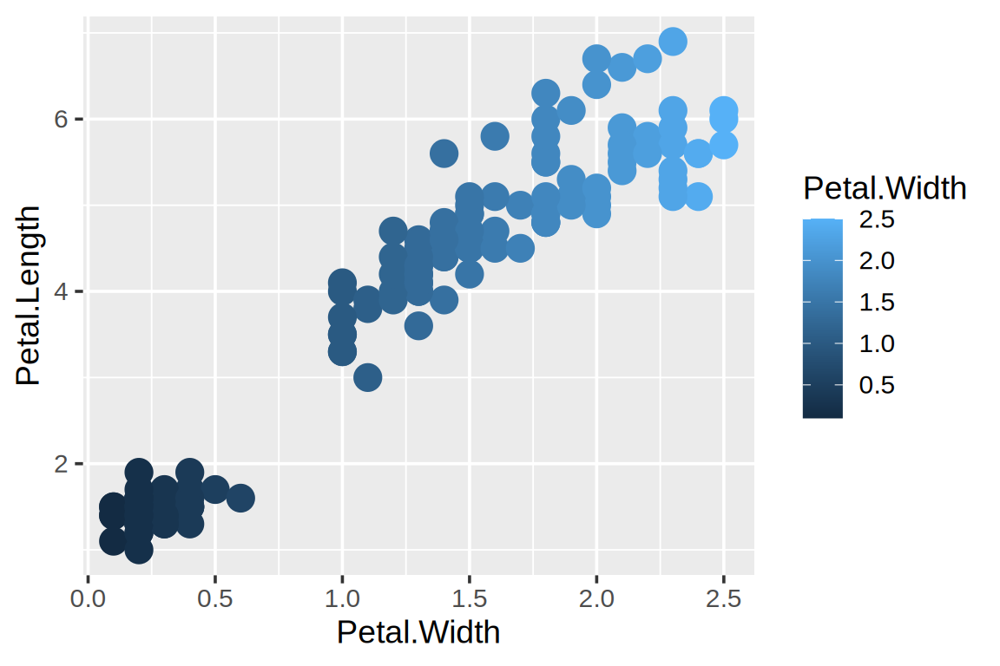
Use scale_color_viridis_c() for a continuous viridis palette. The _d variant is for discrete values.
iris_numeric + scale_color_viridis_c()
A reverse transformation reverses the numerical color scale, which also reverses the ordering of the legend values.
iris_numeric + scale_color_viridis_c(transform = 'reverse')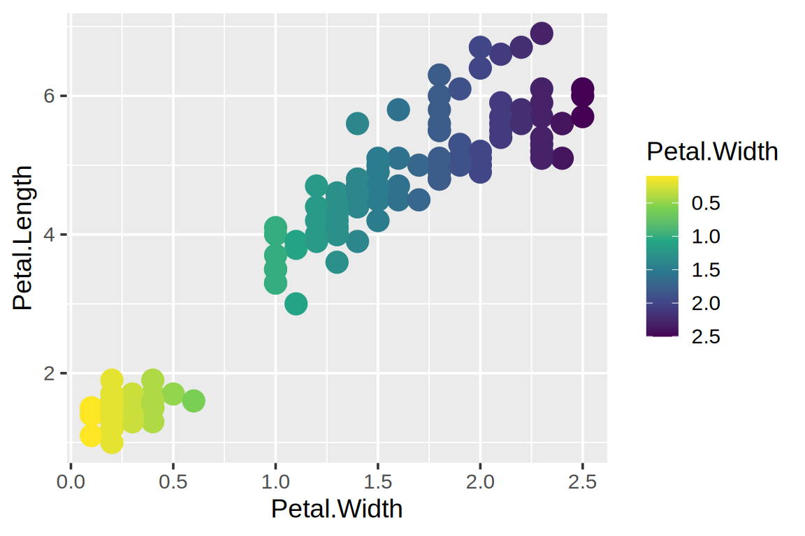
To reverse only the palette while preserving the legend’s numerical order, use direction = -1 instead.
iris_numeric + scale_color_viridis_c(direction = -1)
14.25 Diverging color schemes
For example, a correlation ranges from −1 to 1 and has a natural midpoint at zero. A sequential palette can make a value near zero look more important than a strongly negative correlation simply because zero is numerically larger.
We calculate a correlation matrix from the Gapminder example data. The numeric cluster identifier is excluded because its codes are categories, not a quantitative measurement. The point here is to compare color encodings, not to infer causal relationships from these correlations.
numeric_gapminder = gapminder[['year', 'pop', 'life_expect', 'fertility']]
corr_df = (
numeric_gapminder.corr()
.rename_axis(index='variable_x', columns='variable_y')
.stack().reset_index(name='correlation')
)First, notice how the default sequential scale treats zero.
correlation_heatmap = alt.Chart(corr_df, width=240, height=240).mark_rect().encode(
x='variable_x:N',
y='variable_y:N',
tooltip='correlation:Q',
color='correlation:Q'
)
correlation_heatmapChoose a diverging palette and set the domain to the full possible correlation range. The symmetric limits make equal-magnitude positive and negative correlations comparable.
correlation_heatmap.encode(
color=alt.Color('correlation:Q').scale(domain=[-1, 1], scheme='purpleorange')
)Alternatively, domainMid=0 identifies the midpoint and selects a default diverging palette.
correlation_heatmap.encode(color=alt.Color('correlation:Q').scale(domainMid=0))The same correlation matrix can be computed directly in R.
corr_df <- gapminder |>
select(year, pop, life_expect, fertility) |>
cor(use = 'pairwise.complete.obs') |>
as.table() |>
as.data.frame() |>
set_names(c('variable_x', 'variable_y', 'correlation'))correlation_heatmap <- ggplot(corr_df, aes(x = variable_x, y = variable_y, fill = correlation)) +
geom_tile()
correlation_heatmap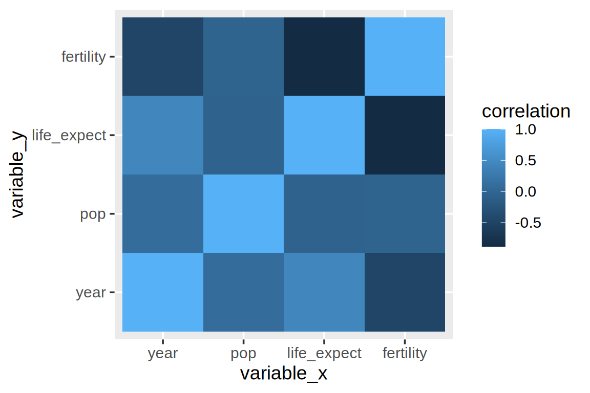
ggthemes provides a Tableau diverging palette.
correlation_heatmap + ggthemes::scale_fill_gradient2_tableau()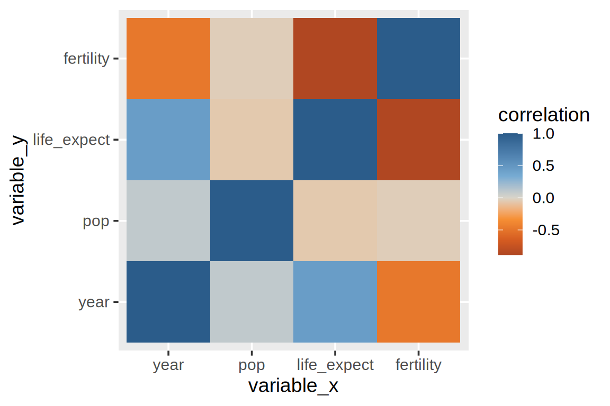
ColorBrewer offers alternatives through scale_fill_distiller(). The palette direction should agree with any relevant familiar association, such as red for warmer temperatures; the sign of a correlation has no inherent color.
correlation_heatmap + scale_fill_distiller(palette = 'PuOr')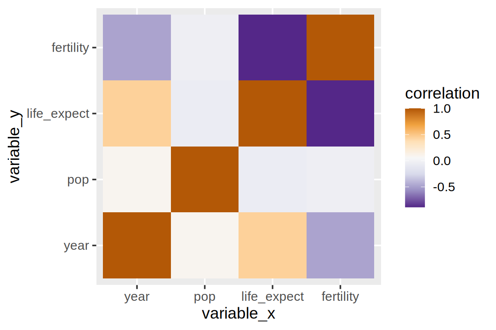
Specify symmetric limits to make equal-magnitude departures from zero equally prominent.
correlation_heatmap + scale_fill_distiller(palette = 'PuOr', limits = c(-1, 1))
14.26 Highlighting with colors
Color can also select a small part of a chart for attention. We use historical wheat prices after 1700, with fewer bars to keep the example readable.
Create a Boolean column for the year to highlight.
wheat['highlight'] = wheat['year'] == 1810
bars = alt.Chart(wheat).mark_bar().encode(
x='year:O',
y='wheat:Q',
color='highlight:N'
)
barsThe Boolean legend is not helpful unless the reader knows what True means. We can remove it and explain the selected year with text instead.
bars = bars.encode(color=alt.Color('highlight:N').legend(None))
barsBar interiors use fill, rather than the outline color aesthetic.
wheat <- wheat |> mutate(highlight = year == 1810)
bars <- ggplot(wheat, aes(x = year, y = wheat, fill = highlight)) +
geom_col(color = 'white') + ggthemes::scale_fill_tableau()
bars
Remove the legend through the theme or guides(fill = 'none').
bars <- bars + theme(legend.position = 'none')
bars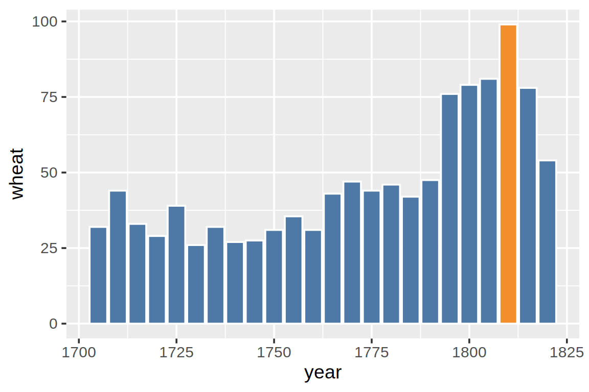
14.27 Text annotations
An exact value can make an important comparison easier to read. Text can also explain why an observation is highlighted. Keep in mind that labeling every observation may add more clutter than information.
Layer a text mark above the bars.
bars + bars.mark_text(dy=-5).encode(text='wheat:Q')The text inherited the bar chart’s color encoding. An encoding takes precedence over a color set directly in the mark. To override it, set a literal encoding value with alt.value(); otherwise a string in an encoding is interpreted as a data column name.
bars + bars.mark_text(dy=-5).encode(text='wheat:Q', color=alt.value('black'))Use geom_text() with the label aesthetic.
bars + geom_text(aes(label = wheat), vjust = -0.3)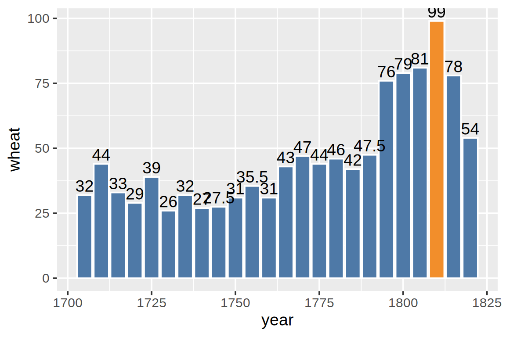
To match the text to the highlighted bar colors, map the color aesthetic and add a corresponding color scale. This is separate from the fill scale used by the bars.
bars +
geom_text(aes(label = wheat, color = highlight), vjust = -0.3) +
ggthemes::scale_color_tableau()
When a label represents a computed count rather than a precomputed value, use a layer with the same counting statistic, for example geom_text(stat = 'count', aes(label = after_stat(count))).
Remove unnecessary decoration
When exact labels already supply the values, some gridlines may be unnecessary. This is a design choice: gridlines can still help readers compare distant marks.
bars = bars.encode(y=alt.Y('wheat:Q').axis(grid=False))
bars + bars.mark_text(dy=-5).encode(text='wheat:Q', color=alt.value('black'))Without gridlines, the outline around the plotting area may stand out unnecessarily. Remove it with configure_view(stroke=None).
(bars + bars.mark_text(dy=-5).encode(
text='wheat:Q', color=alt.value('black')
)).configure_view(stroke=None)Remove the major and minor gridlines through theme elements.
bars +
geom_text(aes(label = wheat, color = highlight), vjust = -0.3) +
ggthemes::scale_color_tableau() +
theme(panel.grid.major = element_blank(), panel.grid.minor = element_blank())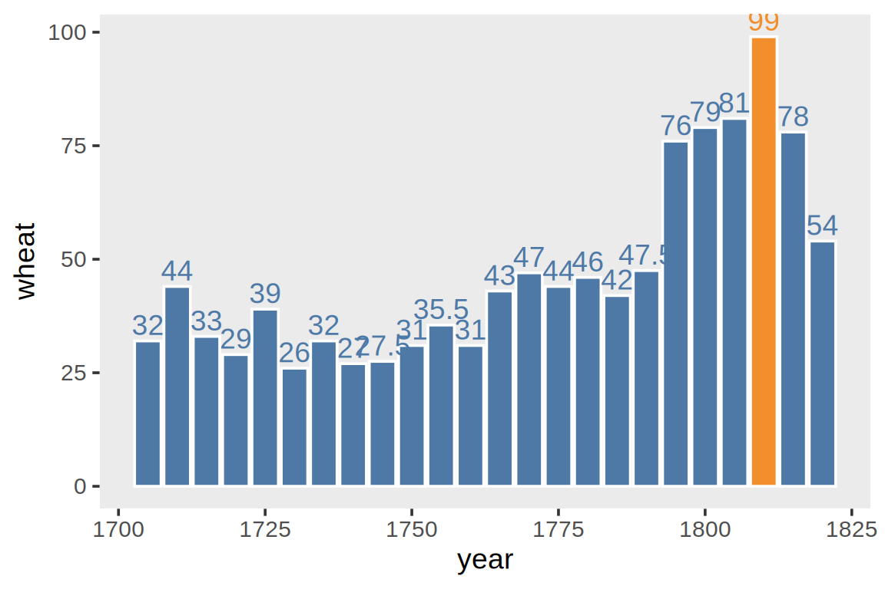
Annotate selected observations
Filtering the annotation data leaves the other bars intact.
bars + alt.Chart(wheat.query('year == 1810')).mark_text(dy=-5).encode(
x='year:O', y='wheat:Q', text='wheat:Q'
)For custom annotation text, use a literal value again.
bars + alt.Chart(wheat.query('year == 1810')).mark_text(dy=-5, dx=-30).encode(
x='year:O', y='wheat:Q', text=alt.value('The record year')
)For multiple annotations, either add a text column to the original data or create a separate annotation dataframe.
annot_wheat = pd.DataFrame({
'year': [1730, 1810],
'wheat': [26, 99],
'text': ['The lowest year', 'The record year']
})
annot_wheat year wheat text
0 1730 26 The lowest year
1 1810 99 The record yearbars + alt.Chart(annot_wheat).mark_text(dy=-5).encode(
x='year:O', y='wheat:Q', text='text:N'
)If labels overlap bars or other labels, adjust their positions, alignment, or color. Separate annotation layers allow each label to have its own placement.
Supply filtered data to the text layer, rather than filtering the whole chart.
bars + geom_text(data = filter(wheat, year == 1810), aes(label = wheat), vjust = -0.3)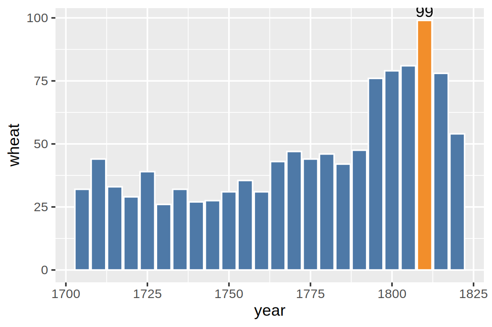
For a fixed annotation, annotate() avoids adding a data column.
bars + annotate('text', label = 'The record year', x = 1810, y = 102, hjust = 1)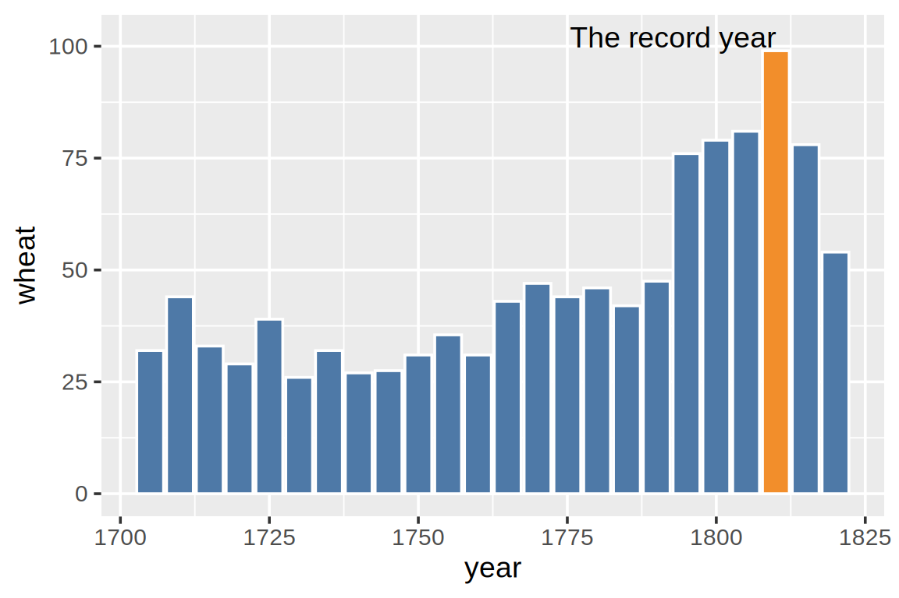
14.28 Direct labeling instead of using a legend
A legend can make the reader repeatedly look away from the plotted marks. The stock-price data provide an example where alphabetical order does not match the order of the line endpoints.
stock_lines = alt.Chart(stocks).mark_line().encode(
x='date:T', y='price:Q', color='symbol:N'
)
stock_linesCalculate the series order at the final date.
stock_order = (
stocks.loc[stocks['date'] == stocks['date'].max()]
.sort_values('price', ascending=False)
)
stock_order symbol date price
436 GOOG 2010-03-01 560.19
559 AAPL 2010-03-01 223.02
245 AMZN 2010-03-01 128.82
368 IBM 2010-03-01 125.55
122 MSFT 2010-03-01 28.80Pass that ordering to the color encoding’s sort parameter.
stock_lines.encode(color=alt.Color('symbol:N').sort(stock_order['symbol'].tolist()))The title “symbol” provides little additional information here and can be removed.
stock_lines.encode(color=alt.Color('symbol:N').sort(stock_order['symbol'].tolist()).title(None))To label the lines directly, add text at each endpoint and remove the legend. Use consistent color domains so the line and text layers identify the same series. The IBM and AMZN endpoints are very close together, so we give their labels small vertical offsets. Only the label positions change, not the line values.
lines = stock_lines.encode(
y=alt.Y('price:Q').title('Price'), color=alt.Color('symbol:N').legend(None)
)
labels = stock_order.assign(
label_price=stock_order['price'] + stock_order['symbol'].map({'IBM': 25, 'AMZN': -25}).fillna(0)
)
text = alt.Chart(labels).mark_text(align='left', dx=6).encode(
x='date:T', y=alt.Y('label_price:Q').title('Price'), text='symbol:N', color='symbol:N'
)
lines + textstock_lines <- ggplot(stocks, aes(x = date, y = price, color = symbol)) +
geom_line() + ggthemes::scale_color_tableau()
stock_lines
Calculate the last-date ordering, then use it as the legend’s breaks.
stock_order <- stocks |>
filter(date == max(date)) |>
arrange(desc(price))
stock_order# A tibble: 5 × 3
symbol date price
<chr> <date> <dbl>
1 GOOG 2010-03-01 560.
2 AAPL 2010-03-01 223.
3 AMZN 2010-03-01 129.
4 IBM 2010-03-01 126.
5 MSFT 2010-03-01 28.8stock_lines + ggthemes::scale_color_tableau(breaks = stock_order$symbol)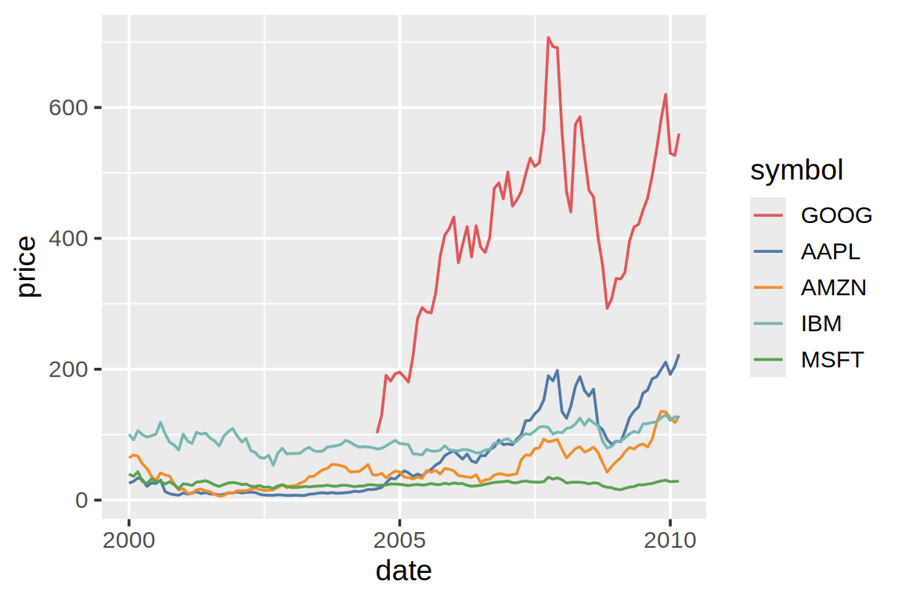
stock_lines + ggthemes::scale_color_tableau(breaks = stock_order$symbol, name = NULL)
To remove the legend altogether, set legend.position = 'none'. Then add geom_text() with the endpoint data. Some extra space on the right keeps the labels within the plotting area. As in Altair, only the labels for the closely spaced IBM and AMZN series are offset.
labels <- stock_order |>
mutate(label_price = price + case_when(
symbol == 'IBM' ~ 25, symbol == 'AMZN' ~ -25, TRUE ~ 0
))
stock_lines +
geom_text(data = labels, aes(y = label_price, label = symbol), hjust = -0.1) +
scale_x_date(expand = expansion(mult = c(0.02, 0.14))) +
theme(legend.position = 'none')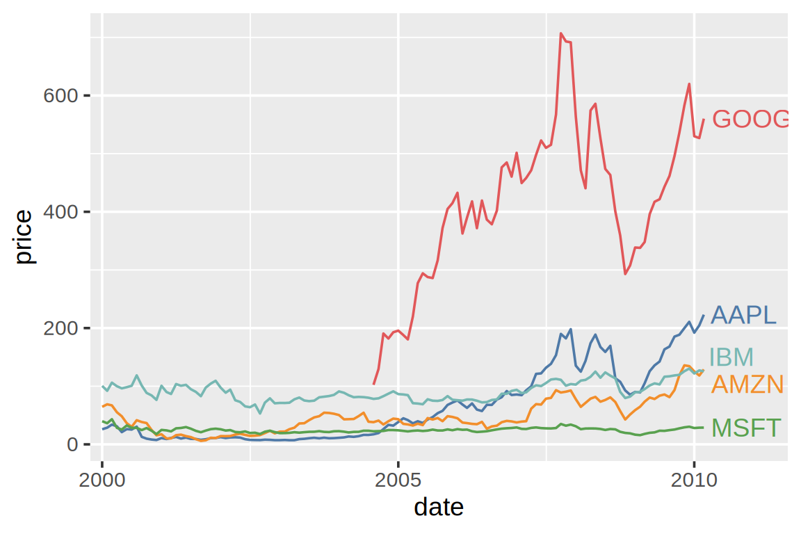